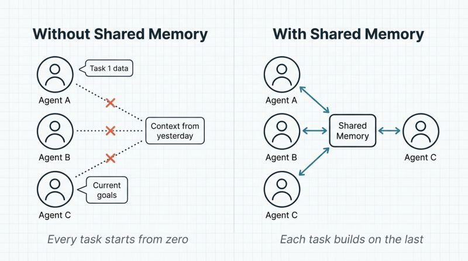

The Memory Problem in Multi-Agent Systems
The memory problem in multi-agent systems is that without shared memory every task starts from zero: a dozen fast agents rediscover the same constraints and repeat the same mistakes, so the team never gets smarter and you burn your speed advantage on rediscovery.
Why a dozen fast agents without shared memory is just expensive repetition.

Most AI agent demos use one agent doing one thing.
I spent the past several months building a development framework where a dozen specialized AI agents work against a shared backlog. They write code, run tests, generate documentation, and review each other's work, with humans approving at every checkpoint.
The models are good enough. The prompting patterns are well-documented. Getting a single agent to produce useful output is largely a solved problem. What isn't solved is what happens when agents need to build on each other's work over time.
Each agent is individually capable, but collectively they're starting over every single time.
The pattern I kept hitting: Agent A discovers that a particular integration has a subtle constraint. Agent A finishes its task. Agent B picks up related work the next day and walks straight into the same constraint, wastes the same time, makes the same mistake. Multiply that across a dozen agents and weeks of work, and you're burning a significant portion of your speed advantage on rediscovery.
The real unlock in multi-agent systems isn't better prompts or bigger models. It's building the memory infrastructure that lets agents learn from each other's work and retain what matters across sessions.
I'll be writing more about what I've learned: the architecture patterns that worked, the governance challenges I didn't anticipate, and the things that broke in ways I couldn't have predicted from reading papers.
If you're building multi-agent systems for real enterprise work, not demos, I'd love to hear what you're running into.
← All writing